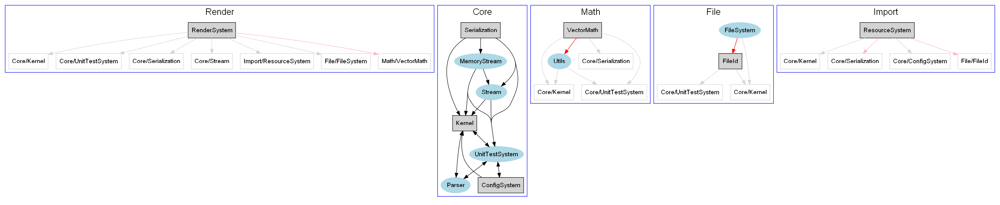

NSToolkit Manual
NSToolkit is the hearth of Noesis. It can be used for lots of purposes related with a Noesis distribution. A Noesis distribution is a subset of an entire Noesis SDK. The distribution only has the packages that are needed to build the applications of that distribution.
Configuration
A configuration file must be provided to the NSToolkit containing the following sections (paths indicated in that file are relatives to the current path)
# NSToolkit settings file
[global]
# A name that describes this distribution
NAME = Cognition
# Directory where binaries are stored when using NsToolkit dist command
DISTDIR = Dist
# Path to NoesisSDK in repository
REMOTEROOT = svn://svn.noesis/Noesis/NoesisSDK/trunk
# Local path where SDK is downloaded from the repository
LOCALROOT = NoesisSDK
# Root packages that from this distribution. The full distribution will be composed of these
# packages and their dependencies
PACKAGES = Apps/Sample, Test/A
# Solution that will be generated containing all the packages
SOLUTION = Tests.sln
All of these settings can be overriden from the commandline, using the "--" prefix (for example --packages to override PACKAGES setting).
If everything is properly configured, you should be able to invoke NSToolkit and get the usage help:
python NoesisSDK\NSToolkit\NSToolkit.py
------------------------------------------------------------------------------
NSToolkit - NoesisEngine Toolkit - v0.65
------------------------------------------------------------------------------
Usage:
NSToolkit command [options]
Commands:
make
Synchronizes source code, generates project files and solutions, and
copies third party binaries.
list
Lists needed packages.
info
Shows information about the selected packages.
graph
Generates a graph of the needed packages.
dist
Extracts a distribution.
Options:
--conf ConfigurationFile
The configuration file used by NSToolkit.
--packages PackageList
The list of packages used (enclosed by quotes and separated by commas
to specify more than one, for example: "Test/A, Test/B, Test/C").
It overrides configuration file PACKAGES section.
--nodepends
Only specified packages used, dependencies ignored.
--allpackages
All packages in the repository used. It overrides --packages option
and configuration file PACKAGES section.
--sync
Synchronizes selected packages with last repository version.
Available for make command only.
--genprj
Generates a project file for each selected package. Available for
make command only.
--solution SolutionPath
The path name of the solution file. It overrides configuration file
SOLUTION section. Available for make command only.
--gensln
Generates a solution file with selected packages. Available for make
command only.
--platform [vs2005|vs2008]
Sets the target compiler to generate projects and/or solution.
Available for make command only.
--dist3rd
Copies needed third party binaries to Bin directory. Available for
make command only.
--compile action.configuration
Compile the selected packages. Available for make command only.
Possible actions are {build, rebuild, clean}. Configuration is the
name of a valid configuration. Example: "--compile build.release"
--output ImageFile
The name of the generated image. Available for graph command only.
--distdir DisttributionPath
Directory where the generated binary distributions are stored.
Available for dist command only.
--distconfig
This flag indicates that the .config files from the bin directory
must be distributed. By default they are not copied. Available for
dist command only.
--copypdb [public|private]
When used in the dist command, this flag indicates that the public
or private pdb
files must be copied to the dist directory.
--installer Script
This flag indicates to the dist command that an installer must be
generated using the configuration stored inside the Installer
directory.
--printcontext
Prints context properties. Only for debugging purposes.
The rest of the configuration files are described in the sections ThirdParties in Noesis and Description of Package Meta definition file
NOTE: in the future, NSToolkit will be a compiled executable for each platform to avoid the dependency with Python.
Make command
Package Synchronization
Each time you want to sync your distribution you must execute
python NoesisSDK\NSToolkit\NSToolkit.py make --sync
Getting an output similar to this
------------------------------------------------------------------------------
NSToolkit - NoesisEngine Toolkit - v0.40
------------------------------------------------------------------------------
[Sync]
Getting NoesisSDK root directories...
Calculating dependencies...
Syncing needed packages from repository...
Updating 20 packages (in 6 modules)...
A NoesisSDK\Src\Packages\Core\Kernel
A NoesisSDK\Src\Packages\Core\Kernel\Include
A NoesisSDK\Src\Packages\Core\Kernel\Include\NsCore
A NoesisSDK\Src\Packages\Core\Kernel\Include\NsCore\IKernel.h
A NoesisSDK\Src\Packages\Core\Kernel\Include\NsCore\Error.h
A NoesisSDK\Src\Packages\Core\Kernel\Include\NsCore\ObjectPool.inl
A NoesisSDK\Src\Packages\Core\Kernel\Include\NsCore\CompilerSettings.h
A NoesisSDK\Src\Packages\Core\Kernel\Include\NsCore\IReflectionRegistry.h
A NoesisSDK\Src\Packages\Core\Kernel\Include\NsCore\Exception.h
A NoesisSDK\Src\Packages\Core\Kernel\Include\NsCore\InterlockMacros.h
A NoesisSDK\Src\Packages\Core\Kernel\Include\NsCore\DynamicCast.h
A NoesisSDK\Src\Packages\Core\Kernel\Include\NsCore\FixedAllocator.h
Project Generation
NSToolkit can be used to generate projects for each platform. You can do it at the same time that you sync or as an alternate step.
For example, this command will generate the .vcproj files for Microsoft Visual Studio for all the packages that are needed for the selected packages
python NoesisSDK\NSToolkit\NSToolkit.py make --genprj
------------------------------------------------------------------------------
NSToolkit - NoesisEngine Toolkit - v0.40
------------------------------------------------------------------------------
[GenPrj]
+ Core/Kernel
+ Render/RenderSystem
+ Core/UnitTestSystem
+ Core/ConfigSystem
+ Core/Parser
+ Scene/VisualComponent
+ Math/VectorMath
+ Scene/Mesh
+ Apps/Sample
+ Math/Collision
+ Import/DataCompiler
+ Import/Importer
+ Core/CommandSystem
+ Core/RemoteCommandSystem
+ Core/Stream
+ Core/MemoryStream
+ Core/Serialization
+ Render/DX9RenderSystem
+ Import/ColladaMeshImporter
+ Import/ShaderImporter
20 packages generated
Solution Generation
Visual Studio solution files can be created also by NSToolkit. The solution will contain all the packages needed by the distribution with the project dependencies set correctly to be able to build in just one step. Solution path file name could be defined in the configuration file or using the --solution option. Distribution information is obtained from configuration file or corresponding options (--packages or --allpackages).
python NoesisSDK\NSToolkit\NSToolkit.py make --solution Sample.sln --gensln
------------------------------------------------------------------------------
NSToolkit - NoesisEngine Toolkit - v0.40
------------------------------------------------------------------------------
[GenSln]
Sample.sln solution generated
List command
With the list command you can get the list of the packages needed for your distribution or all repository packages.
python NoesisSDK\NSToolkit\NSToolkit.py list --packages Apps/Sample
------------------------------------------------------------------------------
NSToolkit - NoesisEngine Toolkit - v0.40
------------------------------------------------------------------------------
Calculating dependencies...
Listing 31 packages in use (sorted by dependency)...
+ Core/Kernel
+ Core/Serialization
+ Core/ConfigSystem
+ Core/UnitTestSystem
+ Core/Parser
+ Math/VectorMath
+ File/FileId
+ Core/Stream
+ Core/MemoryStream
+ Import/ResourceSystem
+ Render/RenderSystem
+ Import/DataCompiler
+ Math/Utils
+ File/FileSystem
+ Import/Importer
+ Scene/VisualSceneManager
+ Scene/Mesh
+ Apps/Sample
+ Math/Collision
+ Render/VCacheOptimizer
+ Core/CommandSystem
+ File/VirtualFileSystem
+ Core/RemoteCommandSystem
+ Gui/VGL
+ Math/Tessellation
+ File/DiskFileSystem
+ Drawing/Image
+ Render/DX9RenderSystem
+ Import/ColladaMeshImporter
+ Import/ShaderImporter
+ Import/ImageImporter
Listing thirdparties in use...
+ DXSDK
+ FCollada
+ FreeImage
+ LibTess
+ NVTT
As you can see. Dependencies from 3rdParties are listed too.
Info command
To get full information about some package you will use the info command.
python NoesisSDK\NSToolkit\NSToolkit.py info --packages Render/RenderSystem --nodepends
------------------------------------------------------------------------------
NSToolkit - NoesisEngine Toolkit - v0.40
------------------------------------------------------------------------------
* Render/RenderSystem
- Description:
Abstract package for the low-level RenderSystem implementation
- Dependencies:
+ Core/Kernel
+ Core/UnitTestSystem
+ Core/Serialization
+ Core/Stream
+ Import/ResourceSystem
+ File/FileSystem
+ Math/VectorMath
- Used by:
+ Apps/CursoOviedo
+ Apps/Sample
+ Gui/Controls
+ Gui/UISystem
+ Gui/VGL
+ Import/ShaderImporter
+ Render/DX9RenderSystem
+ Render/NullRenderSystem
+ Scene/Mesh
+ Scene/VisualSceneManager
Graph command
With this command you could generate an image that shows the dependencies of the packages in your distribution.
python NoesisSDK\NSToolkit\NSToolkit.py graph --packages Render/RenderSystem
------------------------------------------------------------------------------
NSToolkit - NoesisEngine Toolkit - v0.40
------------------------------------------------------------------------------
Calculating dependencies...
Writing PkgGraph.png...
And this is the result image:

{kind=link}
Dist command
Dist command is used to generate binary distributions. It is used by the build machines to generate nightly builds. Installation files are generated with this command too.